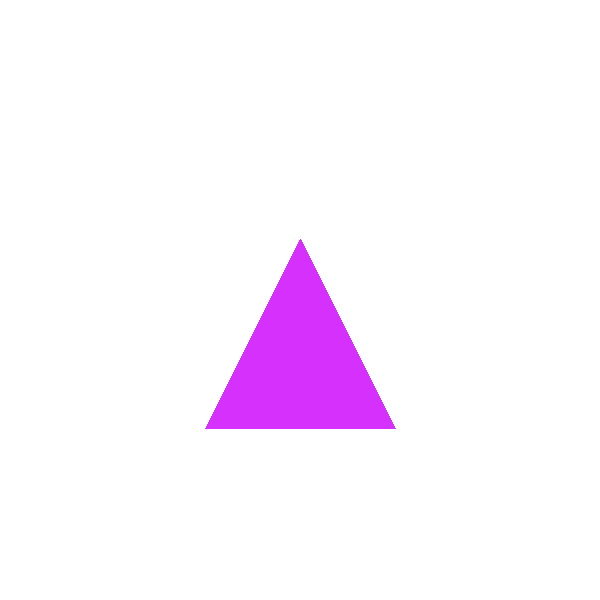
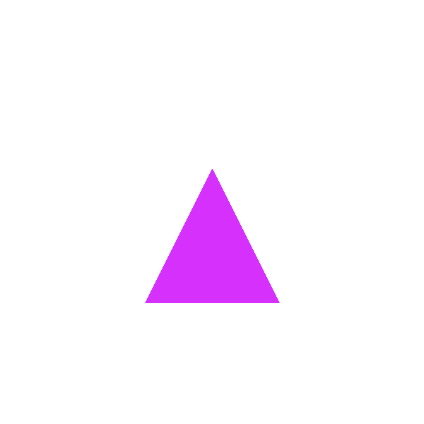
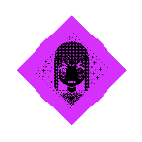
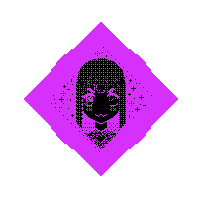
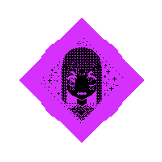
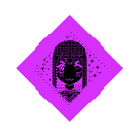

 



ＡＭＭ ＩｃＵＴＥ？！ Ｉ ｎｅｅｄ ｔｏ ｂｅ ｃｕｔｅ ｏｒ ｅｌｓｅ ｅｖｅｒｙｔｈｉｎｇ ｗｉｌｌ ｅｎｄ．
Ｐｌｅａｓｅ ｔｅｌｌ ｍｅ ｔｈａｔ Ｉ’ｍ ａｔｔｒａｃｔｉｖｅ．
Ｐｌｅａｓｅ ｔｅｌｌ ｍｅ ｉｔ’ｓ ｓｏ．
Ｐｌｅａｓｅ ｔｅｌｌ ｍｅ ｔｈｉｓ ｉｓ ｔｈｅ ｔｒｕｔｈ．
Ｐｌｅａｓｅ ｔｅｌｌ ｍｅ． Ｐｌｅａｓｅ ｔｅｌｌ ｍｅ．
Ｙｏｕ ｃａｎ’ｔ ｃｏｍｐｒｅｈｅｎｄ ａｔｔｒａｃｔｉｖｅ ｖａｌｕｅｓ ｏｆ ｔｈｉｓ ｃａｌｉｂｅｒ．
ＯＯＯｏｏｏ ｉｔ’’’’’’’’ｓ ｓＯＯＯ ＣＹｕｕｕＴｅｅ！！！ ！ ！ ！ ！ ！！ ！ ！！１ １ １ １ １ １ １ １！ １ １ １１
Ｌｅｔ ｍｅ ｉｎｃｒｅａｓｅ ｍｙ ｐｈｙｓｉｃａｌ ａｐｐｅａｌ ｂｙ ａ ｆａｃｔｏｒ ｏｆ ５００．
ｏｈ… ｔｈｉｓ ｉｓ ｊｕｓｔ ａｂｓｏｌｕｔｅｌｙ ｔｅｒｒｉｂｌｅ
ｗｅａｒｉｎｇ ｔｈｉｓ ｗｉｌ…ｌ ｉｎｃｒｅａｓ…ｅ ａｐｐｅａｌ ｂｙ ｍａｎｙ ＰＰＰｏｉｎｔｓ Ｉ ｔｈｉｎｋ．
ｓｙ>ｍｐｔｏｍｓ ｏｆ ｂｅｉｎｇ ｔｏｏ ａｔｔｒａｃｔ^ｔｉｖｅ ｉｎｃｌｕｄｅ＆ＤＹＩＮＧａｎｄｙｏｕｒＢｏＤＹ ｂｅｃｏｍｉｎｇ ＳＳＳｌｕｓｈ．％
ｔｈｅ ｂｅｌｌｓ ａｒｅ ｒｉｎｇｉｎｇ， ｔｈｅ ｂｅｌｌｓ ａｒｅ ｒｉｎｇｉｎｇ…
Ｉｆ ｔｈｉｓ ｉｓｎ’ｔ ｄｏｎｅ， Ｉ’ｌｌ ｃｅａｓｅ ｔｏ ｂｅ．
Ｉ ｈａｖｅ ｔｏ ｂｅ ａｓ ｃｕｔｅ ａｓ ｈｅｒ Ｉ ｈａｖｅ ｔｏ ｂｅ ａｓ ｃｕｔｅ ａｓ ｈｅｒ Ｉ ＨＡＶＥ ＴＯ ＢＥ
ＥＸＴＲＡ ＬＯＶＥ ｃａｎ ｍａｋｅ ｕ ｃｕｔｅｒ？？>！
Ｒｅｑｕｉｒｅｄ：ｌｏｖｅ Ｒｅｗａｒｄ：ｉｍ ｃｕｔｅｒ
ｄｏｅｓ ｔｌｋｉｎｇ ｌｉｋｅ ｔｈｉｓ ｍｋ ｍｅ ｃｕｔｅｒ？？？？？？？？？？？？？？？？？
Ｃｕｔｅ ｈｅａｒｔｓ ｉｎ ｍｙ ｅｙｅｓ， ｈｅａｒｔ ｐｕｐｉｌｓ， ｒｏｓｙ ｃｈｅｅｋｓ， ｃｕｔｅ ｓｍｉｌｅｓ， ｂｉｇ ｗａｒｍ ｅｎｅｒｇｙ
ｔｔｔｔｔｔｔｉｉｉｉｉ ｉｎｅｅｄｄ ｔｏ ｅａｔ ｈｅａｒｔｓ ｔｈｅｙ ａｒｅ ｃｕｔｅ ｅａｔ ｈｅａｒｔｓ ｒｉｇｈｔ ｎｏｗ ｎｎｏｎｏｎｏｎｎｏｗｎｗｗｗｗｗＷＷＷＷ
Ｄｏｎ’ｔ ｗｏｒｒｙ， Ｉ’ｌｌ ｂｅｃｏｍｅ ｃｕｔｅ． Ｉ ｈａｖｅ ｔｏ ｄｏ ｔｈｉｓ． Ｉ ｍｕｓｔ％％％
Ｗｈｅｎ Ｉ ｆｉｎａｌｌｙ ｂｅｃｏｍｅ ｔｈｅ ｃｕｔｅｓｔ， ｗｉｌｌ ｔｈｅ ｖｉｃｔｏｒｙ ｂｅ ｓｗｅｅｔ？
Ｓｏｍｅｏｎｅ ｉｓ ＣＵＴｅｒ？ＲＲＲＲＲ？？？？？？？？？？？？？？？？？？？？？？？？？？？？
ｗｈａｔ ｗａｓ ｉｔ ｉｔ ｉｓ ｉｔ ｗａｓ ａｈｈｈｈｈｈｈｈｈｈｈｈｈｈｈｈ Ｉ ｈａｖｅ ｔｏ ｂｅ ｍｏｒｅ ｌｉｋｅ……．
ｉｆ ｅｖｅｒｙｏｎｅ ｅｌｓｅ ｉｓ ｄｅａｄ ｔｈｅｎ ｉ’ｌｌ ｂｅ ｔｈｅ ｃｕｔｅｓｔ ｂｅｉｎｇ ａｌｉｖｅ
ｃｕｔｅ ｂｏｗｓ
Ｉ’ｌｌ ｇｏｕｇｅ ｏｕｔ ｔｈｅｉｒ ｅｙｅｓ． Ｉ’ｌｌ ｌｅａｖｅ ｔｈｅｍ ｂｌｅｅｄｉｎｇ．
９９ｉｆ Ｉ ｗｅｒｅ ｃｕｔｅ ４４ ｔｈｅｎ ｅｖｅｎ ｉｆ２２ ｍｙ ｈｅａｄ ｗａｓ ００ ｇｏｎｅ１１ Ｉ ｗｏｕｌｄ ｂｅ ｐｒｅｔｔｙｙｙ５５ ｃｕｔｅ ｓｔｉｌｌ８８， ｒｉｇｈｔ？７７
ｃｕｔｅ ｄｅｃａｐｉｔａｔｉｏｎ
ＤＯＮ”ｔ”Ｔ”Ｔ ｙｏｕ ＦＯＲ ＧＧＧＧＥＴ，，，，，，，，，，，，，，，，，，，， ｉｄｉｏｔ ｙｏｕ ｉｄｉｏｔ……．．
ｔｅｌｌ ｍｅ ｉｆ ｉｍ ｇｅｔｔｉｎｇ ｃｕｔｅｒ ｏｒ ｎｏｔ ｗｉｔｈ ｔｈｉｓ ｎｅｗｅｓｔ ｕｐｄａｔｅ ｔｏ ｍｙｓｅｌｆ ＯＯＯＫａｙ／？ Ａｌｌｌｌｒｉｇｈｔ， ｈｅｒｅ ｉｔ ｉｓ Ｉ ｓｉ ｉｓｉ ｉｓ Ａｍ Ｉ ｃｕｔｅ？
Ａｒｅ ｙｏｕ ｇｏｉｎｇ ｔｏ ａｓｓａｕｌｔ ｍｅ ｂｅｃａｕｓｅ Ｉ’ｍ ｓｏ ｃｕｔｅ？？１ ｅＬｗｅＷｅｌｌ？
ｒａｉｎ， ｒａｉｎ， ｓｔａｙ ａｌｌ ｄａｙ， ｌｅｔ ｙｏｕｒ ｗａｔｅｒｓ ｎｅｖｅｒ ｗａｎｅ
ｒａｉｎ， ｒａｉｎ， ｐｏｕｒ ｓｏｍｅ ｍｏｒｅ， ａｎｄ ｗａｓｈ ａｗａｙ ａｌｌ ｔｈｉｓ ｐａｉｎ
Ｉｆ ｅｖｅｒｙｏｎｅ ｄｏｅｓｎ’ｔ ｌｏｖｅ ｍｅ ｔｈｅｎ Ｉ’ｍ ｎｏｔ ｃｕｔｅ ｅｎｏｕｇｈ ｔｏ ｂｅ ａｓ ｃｕｔｅ ａｓ ａ ｄｏｌｌ
ａｎｄ ｉｆ Ｉ’ｍ ｎｏｔ ａｓ ｃｕｔｅ ａｓ ａ ｄｏｌｌ ｈｏｗ ｃｏｕｌｄ Ｉ ＥＶＥＲ ｂｅ ａｓ ｃｕｔｅ ａｓ Ｉ ｎｅｅｄ ｔｏ
ｂｅ ｔｏ ＲＥＭＥＭＢＥＲ ＨＥＲ？！Ａ？？！！ａ！
Ｍａｙｂｅ ｔｈｉｓ ｆａｃｅ ｓｈｏｕｌｄ ｂｅ ｈｉｄｄｅｎ．
Ｃｕｔｅ ｌａｃｅｒａｔｉｏｎｓ
Ｃｕｔｅｒ ｔｈａｎ ｍｅ？？？？？？？？？？？？？？？？？？？？？？？？？？？？？？？？？？？？？？？？？？？？？？？？
Ｔｈａｔ’ｓ ｎｏｔ ｆｕｎｎｙ．
Ｔｈａｔ ｂｉｔｃｈ ｗｉｌｌ ｓｏｏｎ ｌｅａｒｎ ｔｈａｔ ｂｏｎｅ ｆｒａｃｔｕｒｅｓ ａｒｅｎ’ｔ ｓｏ ｃｕｔｅ~！
Ｗｈａｔ ａｒｅ ｙｏｕ？
Ｉ ｎｅｅｄ ｔｏ ｒｅｍｅｍｂｅｒ， Ｉ ｈａｖｅ ｔｏ ｒｅｍｅｍｂｅｒ．
Ｔｅｅｔｈ ｃａｎ ｂｅ ｓｃａｒｙ， ｂｕｔ ｔｅｅｔｈ ｃａｎ ｂｅ ｃｕｔｅ．
Ｕｎｋｎｏｗｎｓ ｃａｎ ｂｅ ｃｕｔｅ ｔｏｏ．
Ｃｕｔｅ ｌａｃｅ
Ｔ，／ｅｌｌｌｍ ｅ ｗｈ／ｅｎ Ｉ ｓｈｏ２ｕｌｄ！ ｒｅｍ０ｖ．．ｅｔｈｅ ｃｏ０ｖｅｒｓｏｆ ｍｙｙｙｙｓｓｏｏＵｌｌ
Ｉ ｃａｎ ｓｔｉｌｌ ｈｅａｒ ｈｅｒ ｖｏｉｃｅ．
Ｒｅｍｅｍｂｅｒ．
Ｏｈ， ｔｈｉｓ ｊｕｓｔ ｉｓｎ’ｔ ｒｉｇｈｔ… ｂｙ ｎｏｗ Ｉ ｓｈｏｕｌｄ ｂｅ… Ｉ ｓｈｏｕｌｄ…
Ｙｏｕｒ ｂｏｄｙ ｗｉｌｌ ｂｅ ｕｓｅｄ ｒｅｓｐｏｎｓｉｂｌｙ ｔｏ ｅｎｈａｎｃｅ ｍｙ ｏｗｎ ｃｕｔｅｎｅｓｓ．
Ｉｆ ｙｏｕ ｄｏｎ’ｔ ｕｎｄｅｒｓｔａｎｄ，
ｔｈｅｎ ｔｈａｔ’ｓ ｆｉｎｅ， ｂｅｃａｕｓｅ ｎｏ ｏｎｅ ｓｈｏｕｌｄ ｂｅ ａｂｌｅ ｔｏ ｕｎｄｅｒｓｔａｎｄ ｔｈｉｓ
ｌｅｖｅｌ ｏｆ ａｐｐｅａｌ ｅｘｃｅｐｔ ｆｏｒ ＭＥ．
Ｉｓ ｓａｄｎｅｓｓ ｃｕｔｅ？ Ｓｈｏｕｌｄ Ｉ ｃｒｙ ｍｏｒｅ ｏｆｔｅｎ？
Ｃｏｕｌｄ Ｉ ｂｅ ａｓ ｓｗｅｅｔ ａｓ ａ ｌｏｌｌｉｐｏｐ？ Ａｓ ｓｗｅｅｔ ａｓ ａ ｓｏｄａｐｏｐ？
ｃｕｔｔｔｅｅｃｕｔｅｃｃｃｕｕｔｅｅｅｅｃｕｕｕｔｅｅｅｘｘｃｘｃｘｃｘｃｘｃｘｃｃｘｃｕｔｅ！
Ｉｆ Ｉ’ｍ ｍｏｒｅ ｌｉｋｅ ＨＨＨｅｒ ｔｈｅｎ Ｉ ｍｕｓｔ ｂｅ ＭＭＭＯｒｅ． ａａａａＡ ａａ ＡＡ ａａａＡＡＡ